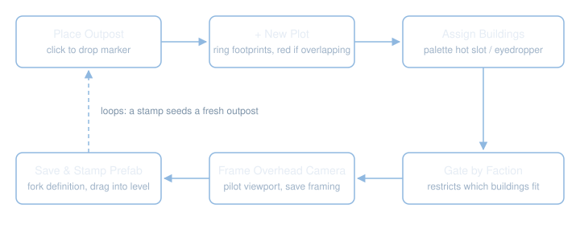

OutpostBuilder
An editor mode for Unreal Engine 5.7 and 5.8 that turns "build an RTS-style outpost" into a handful of clicks instead of a pile of manual actor placement and bookkeeping.
This site is the tutorial and reference. It assumes you know UEdMode, Slate and UPROPERTY, so it
explains this plugin rather than the engine.
New here? Tutorial - A Guided Tour walks every panel and overlay with real screenshots before any of the architecture.
What It Does
From a designer's seat, in the editor, without touching Blueprint or C++:
- Place an outpost. Click in the viewport. A marker actor drops in and a definition asset is created describing what that outpost owns.
- Ring it with plots. Click again to add buildable footprints. The ghost shows whether the spot is clear, legal-but-mismatched, or refused, and reports its distances live.
- Assign buildings. Pick from the thumbnail palette or press 1-9. The hot building auto-assigns to every plot you place next.
- Frame an Overhead camera. Fly the viewport to the shot you want, then save it. One camera per outpost, framing saved per outpost or per plot.
- Stamp it as a prefab. Any outpost you have built is a reusable definition. Drag it back into the level to stamp the whole base, buildings and camera included.
- Ship it. Every plot renders its own building mesh at runtime, so a stamped base is visible in a packaged game with no extra call.

Everything past this point is written for you as the programmer picking this up. Here's how to get it running and place your first outpost in under a minute.
Step 1: Clone the Repo
Grab the plugin from GitHub:
git clone https://github.com/defessler/OutpostBuilder.git
Step 2: Junction the Plugin into Your Project
OutpostBuilder is a standalone plugin. It needs to live under your target project's Plugins/
directory. You can copy the OutpostBuilder folder in directly, but we'd suggest a junction instead.
That way you're always building against the same checkout:
mklink /J "YourProject\Plugins\OutpostBuilder" "path\to\OutpostBuilder"
If you add or change source, regenerate your project files (right-click the .uproject file ->
Generate Visual Studio project files) before the next build.
Step 3: Build the Editor Target
Build.bat YourProjectEditor Win64 DebugGame
Note: In our own setup, we build with -NoUBA -MaxParallelActions=4 appended to that command. UBA
(Unreal Build Accelerator) can kill-loop under memory pressure when other heavy resident processes
are competing for commit, which is the case on our build machine. Treat those flags as a local knob
rather than something you necessarily need if your machine doesn't have the same pressure.
Step 4: Enable the Mode
The plugin ships with EnabledByDefault: true. It should just show up. If it doesn't, open Settings
-> Plugins, search "Outpost Builder", and enable it there.
Step 5: Place Your First Outpost
This part takes about a minute:
- Open the level editor's Modes panel (top-left toolbar) and select "Outpost Builder".
- In the Overview panel's Outposts tab (the default), click "Add New Outpost", then click "Create".
- A green wire box follows your cursor, with a matching ground square marking the exclusion distance around it. Both flip to red if the spot is refused. Click LMB to confirm placement.
- A cube actor appears at that spot, the Editing panel opens automatically, and a new
UOutpostDefinitionasset gets created under/Game/Outposts(configurable via the settings asset's Created Definition Folder, covered inreference.html).
That's your first outpost. Add a plot and assign a building to it. You've already run the whole loop once.
Where to Go From Here
Every page below owns its topic in full. Start wherever your question is.
| Page | What it covers |
|---|---|
| Tutorial | Screen-by-screen walkthrough, illustrated with real screenshots |
| Quick Reference | The cheat sheet: hotkeys, settings surfaces, plot sizes, matching rules |
| Architecture | The module split, the two definition assets, and why plots write back instead of nesting |
| Instance Identity | The FOutpostInstanceId handle, the baked per-level registry, deletion and restore |
| System Wiring | An interactive map of every module, asset and actor, with selectable flows |
| The Ed Mode | The placement state machine, ghost previews, ownership beams, input routing |
| The Toolkit | The Slate side: panel layout, the building palette, hotkeys |
| Prefabs | Definition-as-prefab, fork-on-stamp, and the transform math behind stamping |
| Faction | What faction gates, now that the faction-colour mechanisms are gone |
| Per-Plot Rendering | How plots render their building at runtime, and the per-plot randomizer |
| Technology | What was picked, what was rejected, and what each choice costs |
| Extending | Worked examples: a new definition type, a placement rule, a gizmo, plus the pitfalls list |
| Porting | Lifting the pieces into a project that already has its own base actors |
| Reference | The public API surfaces in full, the hotkey list, testing and scripts |
References
OutpostBuilder/README.md- the designer-facing quick start that ships inside the plugin.TESTING.md- the manual in-editor sweep, step by step.contracts.md- the frozen shared surfaces later refactors have to preserve.